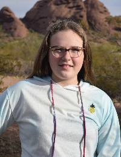

Target Audience
Temple Workers
A large audience that will use this site is the people that travel to work at the temples. This will include people that come every day to help with the ordinaces, people that work in the temple offices, and people that come to work on the temple itself. When these people travel far to come to the temple, they will need a place to stay. This site will not only give them a way to be able to book their room, but also to see what the hotel offers them.
Temple Patrons and Their Families
Many endowed members sacrifice and travel far to visit a temple. Since it is a far distance, many also bring their family members along and make it a family holiday trip. When this is the case, they will need a place to stay. This site will allow these families to not only book rooms, but also see what they have available to them for entertainment (especially for the unendowed family members). They will be able to see exactly what the hotel provides and be able to plan their holiday accordingly. Also, before these families go on their trip, this site will help them be able to learn more about the temple they are visiting. There will also be temple patrons that come by themselves, these patrons will also be able to do all that was mentioned above.
Youth (For Temple Trips)
Many youth in the Young Women and Young Men's programs along with their leaders save up and go on temple trips. As such, they too will need a place to stay and need to know what is available to them for entertainment. This site will provide both of those necessary things for them. They too will be able to plan for their trip with this website by looking up the temple they are going to and learning more about it.
Personas
Persona 1: Youth Temple Trip
Makayla Pierson
Demographics: 16 year old White female, Junior in High School, living with parents and siblings.
Goals and Site Tasks: On the commity to plan the Tempe Stake youth temple trip. Needs to help with the booking of rooms and finding the cost for the hotel stay. Also needs to help plan the itinerary for the trip and therefore, needs to find out what services the hotel provides.
Social/Technological Environment: Frequently on Instagram, Marco Polo, and Tik Tok. Since she is on the commity, she will view this website from several different screen sizes. She will view this site from her IPhone, Google laptop, and a Lenovo desktop computer.
Quote: "Temples are beautiful and I love the feeling I get when I am inside of them."
Scenarios
- Will it be easy to make our reservation?
- Will I be able to easily find the information I need?
- What services does the hotel provide?
- Does the hotel have group pricing discounts?
- How are we going to get from the hotel to the temple?
Persona 2: Temple Workers
Joe and Mary Mortan
Joe Mortan
Occupation: Retired accountant. Full-time temple missionary.
Demographics: 78 year old father of 4 and grandfather of 17 with a Master's Degree in Accounting.
Goals and Site Tasks: Needs to be able to reserve a room and see what the hotel has to offer full-time missionaries as well as have some questions answered.
Social/Technological Environment: Frequents Facebook and Twitter. Will visit this site from two different screen sizes, with his Motorola Razr phone and HP laptop.
Quote: "I am excited for this next phase in our lives but need to be as prepared as I can be."
Mary Mortan
Occupation: Retired kindergarten teacher. Full-time temple missionary.
Demographics: 75 year old mother of 4 and grandmother of 17 with a Bachelor's Degree in Elementary Education.
Goals and Site Tasks: Wants to learn more about the temple she has been assigned to work in.
Social/Tecnological Environment: Frequents Facebook, Twitter, Marco Polo, and Facetime. Will visit this site from two different screen sizes, with an IPhone 12 Pro Max 5G and an Acer laptop.
Quote: "We are blessed when we put the Lord first."
Scenarios
- What can we expect from the hotel as full-time missionaries?
- How will we get to the temple everyday?
- Will our stay be affordable?
- Will we be close to other full-time missionaries?
- What is the temple like where we are assigned?